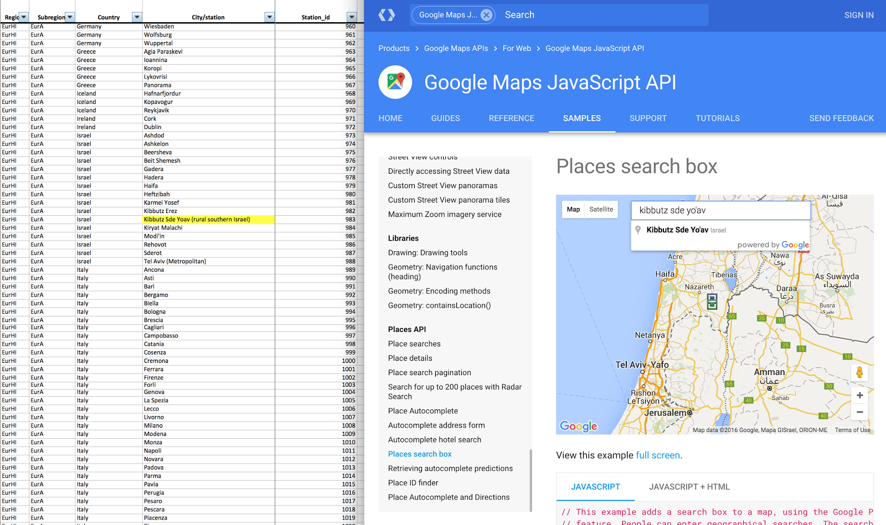

Data
Datasets
Act 1: Air
The central visualization for Act 1 shows air pollution data for various cities and countries using
horizontal bars layered out in a stacked gantt chart style. All of the data for this visualization is
contained in the following WHO data file:
| Data |
Ambient (outdoor) air pollution in cities database 2014. |
| Source |
World Health Organization. |
| Format |
.xls |
| Parameters |
Annual average particulate matter concentrations (PM2.5, PM10). |
| Notes |
This file contains detailed particulate matter data for over 1500 cities around the world
and
will supply the core information for Act 1.
|
The main air pollution visualization will be followed by three subsections which allow the reader to
explore more details about air pollution:
“A year in the life of Beijing’s air”
“Behind the numbers: factors contributing to pollution”,
The following data sources will be used to deliver these subsections:
A year in the life of Beijing’s air
| Data |
High resolution pollution time series |
| Source |
US embassy Beijing |
| Format |
.xls |
| Parameters |
Hourly PM2.5 data |
| Notes |
While the annual average PM2.5 data supplied by the WHO is useful for
broad city and country comparisons, it does not tell the full story about the day to day air
pollution
issues that people face, especially in very polluted cities. This data will help us tell the
stories of
air pollution over a year in Beijing and Delhi, focusing on the extreme pollution events
which are all
too common and especially dangerous to our health.
|
Behind the numbers: factors contributing to air pollution
| Data |
Multiple country level metrics which add context to the pollution problem:
Energy production from coal, by country
Fossil fuel energy consumption by country
Population density by country
Forested area, % of land area
Renewable energy consumption
Urban population (% of total)
Population in urban agglomerations of more than 1 million (% of total population)
Pump price for gasoline (US$ per liter)
Gross enrolment ratio, tertiary, both sexes (%)
|
| Source |
World Bank |
| Format |
.xls |
Act 2: Death
In Act 2 we focus the reader's attention on the human impact of the air pollution see in Act 1. The
central visualization will show deaths from air pollution around the world, and compare this with other
causes of death. The source for this data is again the WHO:
| Data |
Global health estimates: Deaths by cause, age and sex
(20 Leading Causes of Death)
|
| Source |
World Health Organization. |
| Format |
.xls |
| Parameters |
Rank, cause, percent of total annual deaths, deaths per 100,000. |
| Notes |
The data here is supplied as part of the comprehensive Global Burden of Disease study and
contains
detailed breakdowns of deaths by cause. There is too much information here to present
everything, so we
will focus on the top 20 causes of death, plus a few other notable causes that are familiar
with readers
but may not be in the top 20.
|
Act 3: Action
In the final act we bring the reader back to think about their home town and what they can do to both
protect their health from air pollution, and what actions can be taken to help reduce the problem. No
data visualizations are proposed for this section, but information from the Environmental
Protection Agency and other sources of advice on air pollution will be used.
Data cleaning
Data cleaning April 7
WHO Particulate matter dataset
The cleaned WHO particulate matter dataset consists of the data channels shown below. For each we
provide details of any data wrangling performed.
Region:
No changes.
Subregion:
No changes.
Coutry:
Modified country names for Tanzania(id 16), Bolivia (18, 19), Venezuela(99, 100)
City:
A number of names had unnecessary parenthesis or additional location information such as “urban”,
“rural”, “district” which was removed. All suspicious names were checked against the google city
name API to check for compatibility and altered if a sutable match was not found.
The following city names were modified: Buchanan (2), Sanniquelle (3), Baeu Bassin-Rose Hill (4),
Flacq (5), Cape Town (9), Pretoria (11), Tshwane (13), Vaal Priority (14 - deleted), Clarendon (85),
Puerto la Cruz (99), Chalk River (188), Al Ain (660), Brussels (778), Jirkov (787), Annemasse (846).
Lens (851), Frankfurt Oder (912 - deleted) , Frankfurt (913), Kempten (927), Haifa (979), Heftzibah
(980), Karmei Yosef (981), Kibbutz Erez (982), Kibbutz Sde Yo’av (983), Alicante (1139), Castellon
de la Plana (1148), Elche (1151), Pamplona (1170), San Sebastian (1173), Dawki (1262), Male (1364),
Hong Kong (1426), Belait (1545), Brunei-Maura (1546), Temburong (1547), All Japanese cities had
extraneous leading text removed form city name.
Example of data file name checking with google api

StationId:
A unique numerical station number was added for each entry in both the original and cleaned data
files. This identifier will allow the reader to go back to the original file and check the value of
all removed data parameters for any given entry, should this be of interest.
pp10Mean:
Renamed in camelCase.
pm10Year:
Renamed in camelCase. For any entry which contained a range of dates (e.g. 2009-2001), the later
date was used so that only a single value appears. This only occurred for station id’s 665 and 1296.
pm10Converted:
New column indicating “Yes” if the pm10 value was converted from pm2.5 data. In total there were 454
records which matched this criteria.
pm10ConvertedNote:
The channel shows a key which can be looked up to tell what type of data conversion was applied.
pm10ConvertedAlert:
In this column we add warning text to be displayed in a tooltip for any pm10 data that was converted
from pm2.5 measurements: “This PM10 value has been derived from a PM2.5 measurement, therefore
caution is advised when interpreting this result.”
pm2.5Mean:
Renamed in camelCase.
pm2.5Year:
Renamed in camelCase.
pm2.5Converted:
New column indicating “Yes” if the pm2.5 value was converted from pm10 data. In total there were 720
records which matched this criteria.
pm2.5ConvertedNote:
The channel shows a key which can be looked up to tell what type of data conversion was applied.
pm2.5ConvertedAlert:
In this column we add warning text to be displayed in a tooltip for any pm2.5 data that was
converted from pm10 measurements: “This PM2.5 value has been derived from a PM10 measurement,
therefore caution is advised when interpreting this result.”
temporalCoverage:
Renamed in camelCase.
dataCoverageAlert:
Here we add a warning whenever the temporal coverage is indicated to be below 75%: “This station has
low data coverage (<75%), therefore the annual mean pollution level may not be an accurate
representation of the annual conditions.”
In addition, the value NA was inserted where no data was available:
PM10 (98 entries), pm10Year (552 entries), pm2.5 (7 entries), pm2.5Year (728 entries).
Data cleaning April 10
20 Leading Causes of Death
The Causes of Death data was already structured and cleaned by the WHO organization. We only
modified the data by adding information of air pollution. There were two tables; the data of 2000
and 2012. The 2000 data was dropped completely.
Rank
Removed.
Cause
No changes.
Deaths
Removed.
Deaths per 100.000
Because the 3.7 million deaths caused by air pollution are diagnosed as other diseases (source),
those deaths had to be removed from the totals of the individual diseases to prevent duplicate
deaths. The removed counts were added as separate rows with air pollution as their parent. Because
of this, it is possible to zoom into the air pollution numbers.
% Deaths
After the total deaths (Deaths per 100.000) were recalculated, the percentages were updated to keep
the data consistent.
TODO: CLEANING WORLD BANK DATA


 We first had the problem of how to show external svg files with d3. After some research we were able
to show skeletons based on the amount of deaths.
We first had the problem of how to show external svg files with d3. After some research we were able
to show skeletons based on the amount of deaths. We changed the skeletons to show coffins instead. This made the visualization easier to understand
by glancing at it.
We changed the skeletons to show coffins instead. This made the visualization easier to understand
by glancing at it.